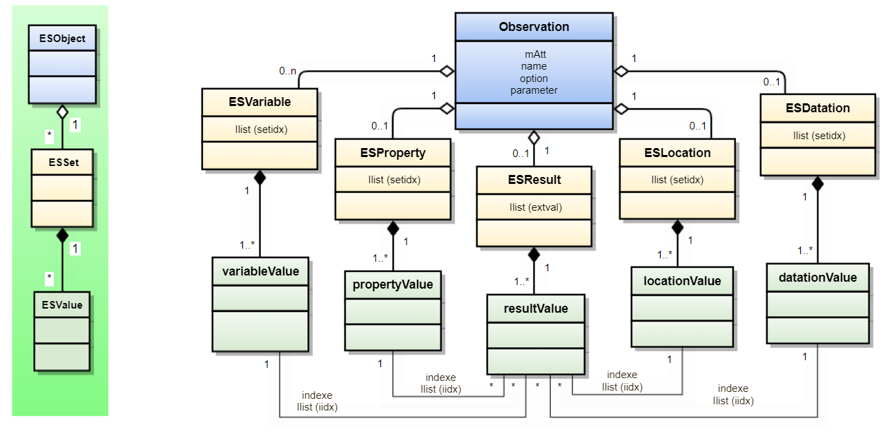
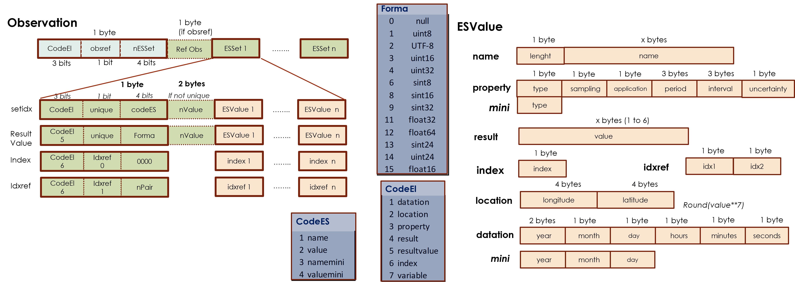
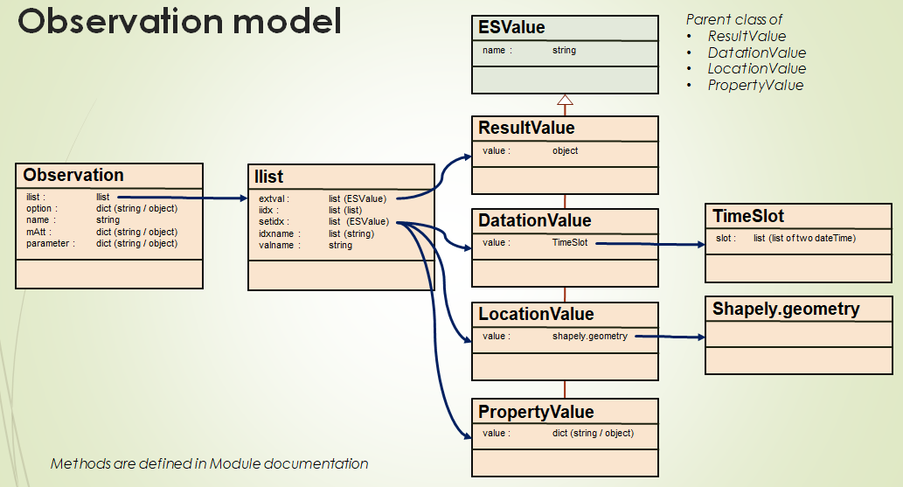

ES
Environmental Sensing Package
Created on Fri Dec 24 15:21:14 2021
@author: philippe@loco-labs.io
Why a project for Environmental Data ?
The project was born from the following observations:
- there is no standard format (apart from the Environmental Sensing Service Bluetooth) used by the sensors to transmit the information (binary and textual),
- there is no data exchange format presenting at the same time a temporal, spatial and physical component (apart from file formats),
- we spend a lot of energy converting this type of data to make it usable.
The Environmental Sensing project
The ES project is made of :
- A data model that makes it possible to represent elementary observations (a simple one-off measurement), complex observations (multi-dimensions), detailed levels of representation (for example, the evolution of a plume of smoke).
- Data formats adapted to interfaces (binary payload for networks, json for requests or for NoSQL API, files)
- A library of connectors for different uses (sensors, database, storage, networks, etc.) in différents languages (python, C++)
- Bidirectional interfaces to data processing tools (eg Numpy, Xarray, GIS).
It allows to :
- Facilitate the use and sharing of environmental data
- Standardize both data acquisition equipment (sensors) and processing applications,
- Implement a software architecture replacing all coding / decoding operations (interfaces) by the use of standard connectors,
- Respect and rely on the main existing standards
- Collectively share and develop a set of open-source connectors responding to all situations (platform)
Main principles
Standards
The main standard about Environmental Data is the ISO-19156 "observation and measurement" standard :
"This International Standard defines a conceptual schema for observations, and for features involved in sampling when making observations. These provide models for the exchange of information describing observation acts and their results, both within and between different scientific and technical communities."
But this standard specifies that:
"ISO 19156 concerns only interfaces visible from the outside and does not impose any restrictions on the underlying implementations"
The other standards concern more restricted areas and are sometimes incompatible. They often remain at a syntactic and non-semantic level. The proposed data structure is based on existing standards that it complements by ensuring convergence:

Observation
In the ISO-19156 standard, an Observation is characterized by:
- "observed property": the observed property,
- "feature of interest": the object (most often a location) of the observation,
- "procedure": the information acquisition mode (sensor, model, etc.)
- "result": result of the observation or the measurement
The result is a set of values or objects referenced according to the 3 dimensions:
- temporal,
- spatial,
- physical (observed property)

In the ES project, the three dimensions are respected but it is possible to add other dimensions.
An Observation object consists of five components :
- a set of Features (Datation Object, Location Object, Property Object, Variable Object)
- a Result Object
- an Index object (link between Result and Axes)
- a Parameter object
It can be converted into a multi-dimensional matrix (one dimension for each Feature), each result being indexed by Features Values (e.g. temporal, spatial, physical values).
Common properties (indicators) are associated with each Observation. They allow processing to be performed on Observations without having to know their composition (e.g. bounding boxes, type of observation, volume, etc.).
Data structure
The implemented data structure respects the principles of the standard.
An Observation object groups common data (name, options, parameters) and associates each of the Features
- spatial (LocationValue objects)
- temporal (DatingValue objects)
- properties (PropertyValue objects)
- others (NamedValue, ExternValue objects)
to results (any objects).

An Observation can represent both a single measurement and a large historical data set.
Index
In the usual tabular representations (like Excel or csv) there is one row for each Result and a lot of columns for Datation, Location and Property. This representation is simple and readable, but it duplicates the information and is not suitable for updates.
In the ES project, we choose the indexed representation suitable for computer processing. Thus, the Result object is made up of its own attributes as well as an index to the Features objects.
Dimension
A result is associated with a property, a location and a date. The Result Object is therefore indexed with three axes (dimension = 3). But there are two cases where the dimension is reduced:
- if an axis has only one value
- if two axes are coupled
For example, if on a path we measure a property, the dimension is 1 (Location and Datation are coupled, Property has one value).
This notion is important because it conditions the modes of representation (e.g., plot).
Configuration and customization
Parameters and additional information may be added at different levels:
- global : At the Observation level, we may add specific informations with specific
key / value e.g.:
- { 'type' : 'observation' ,'test campaign' : 'first', 'datation' : 'morning' , 'location' : 'paris' , 'property' : ' Temp' , 'result' : 'high' }
- local : We may customize the 'name' attribute e.g.:
- 'datation' : [ { 'first campaign' : '2021-01-01' } , { 'second campaign' : ''2021-03-01' } ]
- 'property' : [ { 'inside' : 'Temp' } , { 'outside' : 'Temp' } ]
- individual : Each Result value may be annotate e.g.:
- 'result' : { 'first result' : 'high' }
- 'result' : {'https://loco-philippe.github.io/ES.html' : 'high' }
The PropertyValues are defined in a catalogue which may be specific.
Observation management
Some operations are available for Observation objects
between two Observation :
- Addition function : The Result values are added
- Extend function : The axes are added (e.g. template Observation)
- Append function : An Observation is included as a Result value (e.g. tree structure)
for one Observation :
- Sort function : changing the order of data according to the axes order
- Find function : selecting some data
- Full function : add empty Result value to complete an Observation
These operations make it possible to cut, group, restructure and classify the Observations.
Json interface
The JSON format is used for Observation interchange. The ObsJSON format support the Observation data model. This means that an Observation generated from a JSON format from another Observation is identical to this one.
This format is defined in the ObsJSON document.
This format is extended to JSON binary format which allows :
- storage of observation as a file
- natural representation of dates (datetime)
- taking into account all types of objects in binary form
Two binary format are available :
- BSON format (used in NoSQL databases like Mongodb)
- CBOR format (dedicated to small code size, small message size)
Binary sensor interface
The binary payload is necessary for exchanges with LPWAN networks (e.g. LoRaWAN). The payload should be as compact as possible to minimize the Time-on-Air and reduce power consumption (for battery operated) devices. For example, the maximum lenght of the payload is between 51 bytes and 222 bytes for LoRaWAN.
To obtain this maximum length, limitations are imposed.
Two formats are defined :
- CBOR format with optimization to insure low payload,
- internal optimized format for the most simple usages.

The diagram above shows the structure of the payload.
Note : The right side of the diagram explains the coding of the values. This coding is the same as that used by Bluetooth in the Environmental Sensing Service.
To obtain low payload, a specific process can be used (see below). It allows data to be sent in two stages: first send metadata, second (in operation use) send data.
Bluetooth mapping
The Environmental Sensing Service is a Bluetooth protocol for sensors. The data exposed in this protocol are compatible and consistent with the Observation data model. Thus, Bluetooth data is automatically converted into Observation data.
The diagram below shows the mapping of the two structures.
Xarray mapping
Xarray is very powerful to analyze and process multi-dimensional data. Xarray share the same principle as Observation: indexed multi-dimensional data. Thus, it's natural du use Xarray if you want to analyze Observation data.
The difference between Observation and Xarray is that Xarray uses matrix data and Observation uses only indexed data. Therefore, to transfer Observation data to Xarray we must complete data with 'nan' value to obtain a complete matrix with the right dimension (1, 2 or 3).
The diagram below shows the mapping of the two structures.
Getting Started
The code used, the results and the explanations are provided through "Jupyter Notebook" indicated in link in each chapter. The Notebook files are stored in Github and can be replayed.
First Observation
This chapter explain you (see the page here) :
- how to create a simple and more complex Observation Object
- the different view of the data
- how the ObsJSON is structured
Observation for sensor
A sensor sends data to a server with a specific protocol. The server stores and processes the data. The sensor how use TCP/IP sends the data with ObsJSON format (see above). This chapter introduces you to the to binary interface and explain you: (see the page here) :
- how to encode and decode binary data
- the processes to obtain low data as explain in the "Binary interface" chapter
Dimension concept
The dimension is an important concept to understand (see chapter above).
In this example, we show you Observations with differents dimensions (1 to 3).
We also present how Result values without index can be loaded with the 'order' parameter.
Observation management
Under construction
Quick overview
Under construction
Create an Observation
Under construction
- Measuring station
- Mobile sensor
- Simulation
- Access information
- Visualize an Observation
Generate an Exchange format
Under construction
- Binary format
- Json format
- No SQL format
Managing Observations
Under construction
- Add
- Sort
- Filter
- Aggregation
Interface
Under construction
- Numpy export
- Xarray export
- File storage
Developers documentation
Data model
An ESObservation.Observation is an object representing a set of information having
spatial and temporal characteristics associated with measurable or observable
properties.
The Observation Object is built around three main bricks :
- Ilist Object which deal with indexing,
- ESValue Object which integrate the specificities of environmental data,
- Tools dedicated to particular domains (Shapely for location, TimeSlot for Datation)
The ES functions are divided according to the class below:

Modules contain the following classes:
ESObservation :
ESValue :
Ilist :
Iindex :
TimeSlot :
ESconstante :
View Source
# -*- coding: utf-8 -*- """ ## ***Environmental Sensing Package*** Created on Fri Dec 24 15:21:14 2021 @author: philippe@loco-labs.io # Why a project for Environmental Data ? The project was born from the following observations: - there is no standard format (apart from the Environmental Sensing Service Bluetooth) used by the sensors to transmit the information (binary and textual), - there is no data exchange format presenting at the same time a temporal, spatial and physical component (apart from file formats), - we spend a lot of energy converting this type of data to make it usable. # The Environmental Sensing project The ES project is made of : - A data model that makes it possible to represent elementary observations (a simple one-off measurement), complex observations (multi-dimensions), detailed levels of representation (for example, the evolution of a plume of smoke). - Data formats adapted to interfaces (binary payload for networks, json for requests or for NoSQL API, files) - A library of connectors for different uses (sensors, database, storage, networks, etc.) in différents languages (python, C++) - Bidirectional interfaces to data processing tools (eg Numpy, Xarray, GIS). It allows to : - Facilitate the use and sharing of environmental data - Standardize both data acquisition equipment (sensors) and processing applications, - Implement a software architecture replacing all coding / decoding operations (interfaces) by the use of standard connectors, - Respect and rely on the main existing standards - Collectively share and develop a set of open-source connectors responding to all situations (platform) # Main principles ## Standards The main standard about Environmental Data is the ISO-19156 "observation and measurement" standard : *"This International Standard defines a conceptual schema for observations, and for features involved in sampling when making observations. These provide models for the exchange of information describing observation acts and their results, both within and between different scientific and technical communities."* But this standard specifies that: *"ISO 19156 concerns only interfaces visible from the outside and does not impose any restrictions on the underlying implementations"* The other standards concern more restricted areas and are sometimes incompatible. They often remain at a syntactic and non-semantic level. The proposed data structure is based on existing standards that it complements by ensuring convergence: <img src="./ES/standard.png" width="800"> ## Observation In the ISO-19156 standard, an Observation is characterized by: - "observed property": the observed property, - "feature of interest": the object (most often a location) of the observation, - "procedure": the information acquisition mode (sensor, model, etc.) - "result": result of the observation or the measurement The result is a set of values or objects referenced according to the 3 dimensions: - temporal, - spatial, - physical (observed property) <img src="./ES/structure.png" width="800"> In the ES project, the three dimensions are respected but it is possible to add other dimensions. An Observation object consists of five components : - a set of Features (Datation Object, Location Object, Property Object, Variable Object) - a Result Object - an Index object (link between Result and Axes) - a Parameter object It can be converted into a multi-dimensional matrix (one dimension for each Feature), each result being indexed by Features Values (e.g. temporal, spatial, physical values). Common properties (indicators) are associated with each Observation. They allow processing to be performed on Observations without having to know their composition (e.g. bounding boxes, type of observation, volume, etc.). ## Data structure The implemented data structure respects the principles of the standard. An Observation object groups common data (name, options, parameters) and associates each of the Features - spatial (LocationValue objects) - temporal (DatingValue objects) - properties (PropertyValue objects) - others (NamedValue, ExternValue objects) to results (any objects). <img src="./ES/ESmodel.png" width="600"> An Observation can represent both a single measurement and a large historical data set. ## Index <img src="./ES/index.png" width="800"> In the usual tabular representations (like Excel or csv) there is one row for each Result and a lot of columns for Datation, Location and Property. This representation is simple and readable, but it duplicates the information and is not suitable for updates. In the ES project, we choose the indexed representation suitable for computer processing. Thus, the Result object is made up of its own attributes as well as an index to the Features objects. ## Dimension <img src="./ES/dimension.png" width="800"> A result is associated with a property, a location and a date. The Result Object is therefore indexed with three axes (dimension = 3). But there are two cases where the dimension is reduced: - if an axis has only one value - if two axes are coupled For example, if on a path we measure a property, the dimension is 1 (Location and Datation are coupled, Property has one value). This notion is important because it conditions the modes of representation (e.g., plot). ## Configuration and customization Parameters and additional information may be added at different levels: - global : At the Observation level, we may add specific informations with specific key / value e.g.: - *{ 'type' : 'observation' ,**'test campaign' : 'first'**, 'datation' : 'morning' , 'location' : 'paris' , 'property' : ' Temp' , 'result' : 'high' }* - local : We may customize the 'name' attribute e.g.: - *'datation' : [ { **'first campaign'** : '2021-01-01' } , { **'second campaign'** : ''2021-03-01' } ] - 'property' : [ { **'inside'** : 'Temp' } , { **'outside'** : 'Temp' } ]* - individual : Each Result value may be annotate e.g.: - *'result' : { **'first result'** : 'high' } - 'result' : {**'https://loco-philippe.github.io/ES.html'** : 'high' }* The PropertyValues are defined in a catalogue which may be specific. ## Observation management Some operations are available for Observation objects - between two Observation : - Addition function : The Result values are added - Extend function : The axes are added (e.g. template Observation) - Append function : An Observation is included as a Result value (e.g. tree structure) <img src="./ES/extension.png" width="800"> - for one Observation : - Sort function : changing the order of data according to the axes order - Find function : selecting some data - Full function : add empty Result value to complete an Observation <img src="./ES/extraction.png" width="800"> These operations make it possible to cut, group, restructure and classify the Observations. ## Json interface The JSON format is used for Observation interchange. The ObsJSON format support the Observation data model. This means that an Observation generated from a JSON format from another Observation is identical to this one. This format is defined in the <a href="https://github.com/loco-philippe/Environnemental-Sensing/blob/main/documentation/ObsJSON%20-%20Standard.pdf" target="_blank">ObsJSON document</a>. This format is extended to JSON binary format which allows : - storage of observation as a file - natural representation of dates (datetime) - taking into account all types of objects in binary form Two binary format are available : - BSON format (used in NoSQL databases like Mongodb) - CBOR format (dedicated to small code size, small message size) ## Binary sensor interface The binary payload is necessary for exchanges with LPWAN networks (e.g. LoRaWAN). The payload should be as compact as possible to minimize the Time-on-Air and reduce power consumption (for battery operated) devices. For example, the maximum lenght of the payload is between 51 bytes and 222 bytes for LoRaWAN. To obtain this maximum length, limitations are imposed. Two formats are defined : - CBOR format with optimization to insure low payload, - internal optimized format for the most simple usages. <img src="./ES/binary.png" width="800"> The diagram above shows the structure of the payload. *Note : The right side of the diagram explains the coding of the values. This coding is the same as that used by Bluetooth in the <a href= "https://www.bluetooth.com/specifications/specs/environmental-sensing-service-1-0/" target="_blank">Environmental Sensing Service</a>.* To obtain low payload, a specific process can be used (see below). It allows data to be sent in two stages: first send metadata, second (in operation use) send data. <img src="./ES/sensor.png" width="800"> ## Bluetooth mapping The Environmental Sensing Service is a Bluetooth protocol for sensors. The data exposed in this protocol are compatible and consistent with the Observation data model. Thus, Bluetooth data is automatically converted into Observation data. The diagram below shows the mapping of the two structures. <img src="./ES/bluetooth.png" width="800"> ## Xarray mapping Xarray is very powerful to analyze and process multi-dimensional data. Xarray share the same principle as Observation: indexed multi-dimensional data. Thus, it's natural du use Xarray if you want to analyze Observation data. The difference between Observation and Xarray is that Xarray uses matrix data and Observation uses only indexed data. Therefore, to transfer Observation data to Xarray we must complete data with 'nan' value to obtain a complete matrix with the right dimension (1, 2 or 3). The diagram below shows the mapping of the two structures. <img src="./ES/xarray.png" width="800"> # Getting Started The code used, the results and the explanations are provided through "Jupyter Notebook" indicated in link in each chapter. The Notebook files are <a href="https://github.com/loco-philippe/loco-philippe.github.io/tree/main/Example" target="_blank"> stored in Github</a> and can be replayed. ## First Observation This chapter explain you <a href="./Example/first_observation.html" target="_blank">(see the page here)</a> : - how to create a simple and more complex Observation Object - the different view of the data - how the ObsJSON is structured ## Observation for sensor A sensor sends data to a server with a specific protocol. The server stores and processes the data. The sensor how use TCP/IP sends the data with ObsJSON format (see above). This chapter introduces you to the to binary interface and explain you: <a href="./Example/sensor_observation.html" target="_blank">(see the page here)</a> : - how to encode and decode binary data - the processes to obtain low data as explain in the "Binary interface" chapter ## Dimension concept The dimension is an important concept to understand (see chapter above). In this example, we show you Observations with differents dimensions (1 to 3). We also present how Result values without index can be loaded with the 'order' parameter. <a href="./Example/dimension.html" target="_blank">(see the page here)</a> : ## Observation management *Under construction* # Quick overview *Under construction* ## Create an Observation *Under construction* - Measuring station - Mobile sensor - Simulation - Access information - Visualize an Observation ## Generate an Exchange format *Under construction* - Binary format - Json format - No SQL format ## Managing Observations *Under construction* - Add - Sort - Filter - Aggregation ## Interface *Under construction* - Numpy export - Xarray export - File storage # Developers documentation ## Data model An `ESObservation.Observation` is an object representing a set of information having spatial and temporal characteristics associated with measurable or observable properties. The Observation Object is built around three main bricks : - Ilist Object which deal with indexing, - ESValue Object which integrate the specificities of environmental data, - Tools dedicated to particular domains ([Shapely](https://shapely.readthedocs.io/en/stable/manual.html) for location, TimeSlot for Datation) The ES functions are divided according to the class below: <img src="./ES/EShierarchie.png" width="800"> Modules contain the following classes: - ESObservation : - `ES.ESObservation` - ESValue : - `ES.ESValue`(`ES.ESValue.DatationValue`, `ES.ESValue.LocationValue`, `ES.ESValue.PropertyValue`, `ES.ESValue.NamedValue`, `ES.ESValue.ExternValue`, `ES.ESValue.ESValue`) - Ilist : - `ES.ilist` - Iindex : - `ES.iindex` - TimeSlot : - `ES.timeslot` - ESconstante : - `ES.ESconstante`. """